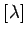
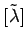
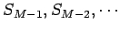

Inhalt Index DeskTop Bronstein

 Algebra und Diskrete Mathematik Klassische algebraische Strukturen Darstellung von Gruppen Irreduzible Darstellung der symmetrischen Gruppe
Algebra und Diskrete Mathematik Klassische algebraische Strukturen Darstellung von Gruppen Irreduzible Darstellung der symmetrischen Gruppe


Die inäquivalenten irreduziblen Darstellungen der symmetrischen Gruppe SM werden eindeutig durch die Partitionen  von M charakterisiert, d.h. durch die Aufspaltung von M in ganze Zahlen entsprechend
Die graphische Darstellung der Partitionen erfolgt durch Kästchen, die zu YOUNGschen Rahmen geordnet werden.
| Beispiel A |
|
Für die Gruppe S4 erhält man die fünf, im nebenstehenden Schema dargestellten YOUNGschen Rahmen. Der konjugierte YOUNGsche Rahmen  geht aus durch Vertauschen von Zeilen und Spalten hervor. Irreduzible Darstellungen von SM sind im allgemeinen reduzibel, wenn man sich auf eine der Untergruppen  beschränkt. |
| Beispiel B |
|
Für ein System identischer Teilchen mit halbzahligem Spin verlangt das PAULI-Prinzip in der Quantenmechanik die Konstruktion von Vielteilchen-Wellenfunktionen, die bei Vertauschung aller Koordinaten zweier beliebiger Teilchen antisymmetrisch sind. Oft liegt die Wellenfunktion als Produkt aus einer Orts- und einer Spinfunktion vor. Transformiert sich in diesem Fall die Ortsfunktion bei Teilchenpermutation nach einer irreduziblen Darstellung der symmetrischen Gruppe, dann muß sie mit einer Spinfunktion kombiniert werden, die sich nach der konjugierten Darstellung transformiert, damit die Gesamt-Wellenfunktion zweier Teilchen bei Vertauschung antisymmetrisch wird. |